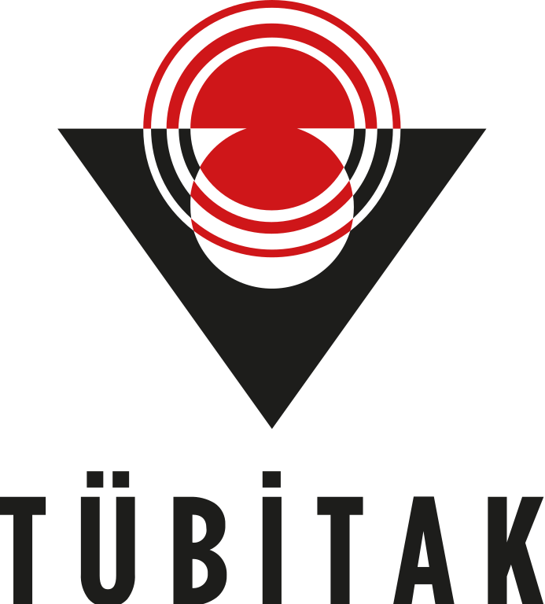
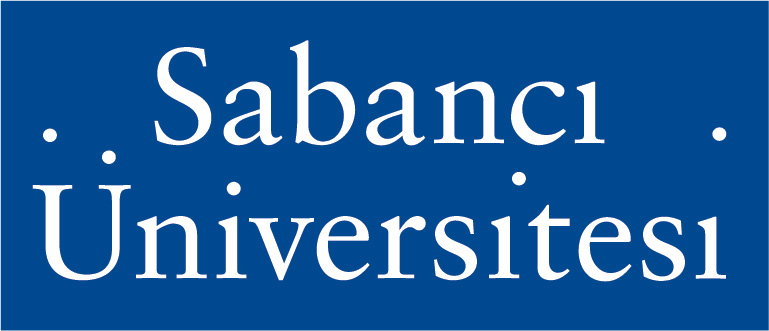
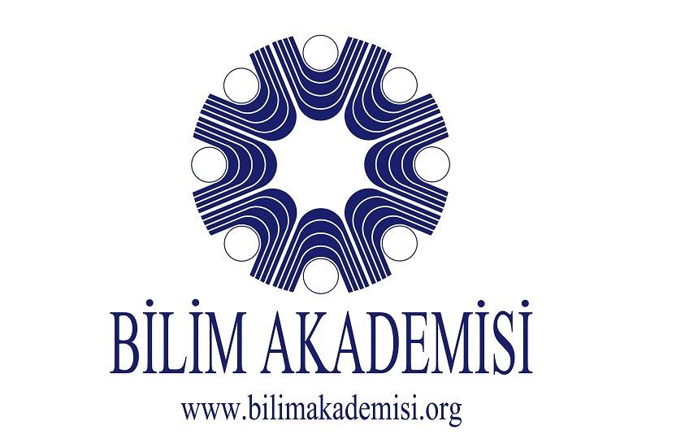

Active Projects
2025-2028
ECLIPSE: PrEventing and Combating onLine and offline hate speech and dIsinformation through multidisciPlinary innovation, education, and awareneSs in Europe
HORIZON
2025-2027
Modeling the Motivation for Following Political Leaders on Social Networks and Agenda-Setting Strategies Using Computational Social Science Methods
TUBITAK-1001
2025-2027
Online Activism through Social Media: The Case of Turkey
TUBITAK-3501
2023-2026
CON-NET: Integrating CONtent and NETwork structure for detecting, understanding, and mitigating online misbehaviour
CHIST-ERA
Completed Projects
2022-2025
Developing systems for coordination and automated behavior detection on online social networks
TUBITAK-2247D
2024-2025
Network Analysis of Global Diplomatic Interactions through Bureaucrats, Time, and Space
TUBITAK-3501
2022-2024
Data science for social good (The Young Scientist Award)
BAGEP - Bilim Akademisi
2021-2022
Causal analysis of daylight saving time and quantifying its impact on wellbeing
TUBITAK-1002
Funding resources


